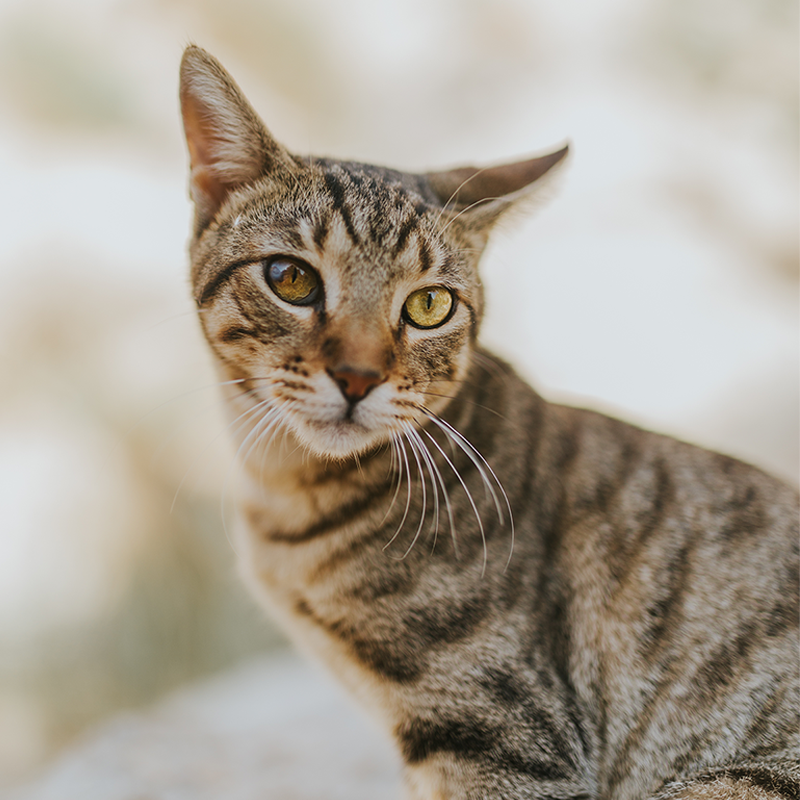

Our Story
Twin Cities Animal Rescue is a community nonprofit focused on helping animals find safe homes and giving community members meaningful ways to support rescue work.
Our Core Values
- Compassion for animals and the people who care for them
- Responsible and thoughtful placement
- Trust and respect within the community
- Teamwork with volunteers, fosters, adopters, and partners
Pet Spotlight

A Message From Our Rescue Team
Community Partners
We appreciate the local volunteers, foster families, veterinary professionals, donors, and community organizations that support rescue animals and help connect them with permanent homes.